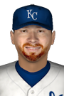

|
|
|  |
Kansas City Trades Lynch for Los Angeles's Rios Tuesday, July 28th, 2020 The Royals and Dodgers announced a deal that was completed today. Kansas City sent 35-year-old RHP Ian Kennedy and 23-year-old minor league LHP Daniel Lynch to Los Angeles for 26-year-old minor league 1B Edwin Rios. Both teams appear happy with the outcome of the trade. The general managers told the Baseball News Network they felt the swap was beneficial for all parties involved. Kansas City will retain a portion of Kennedy's remaining contract. |


|